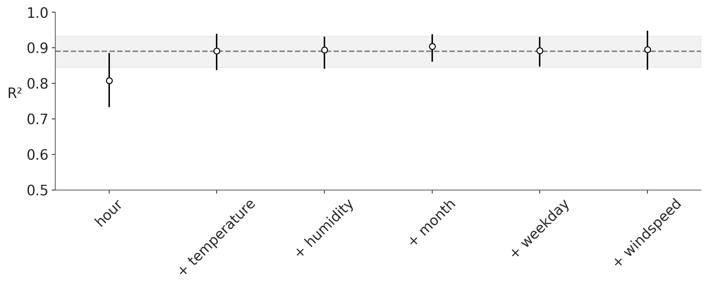
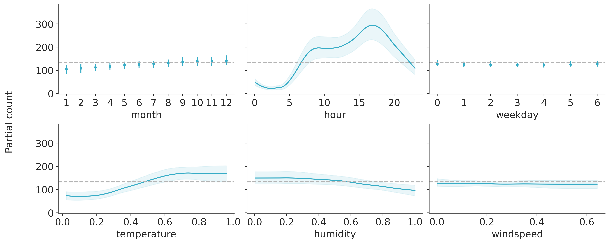
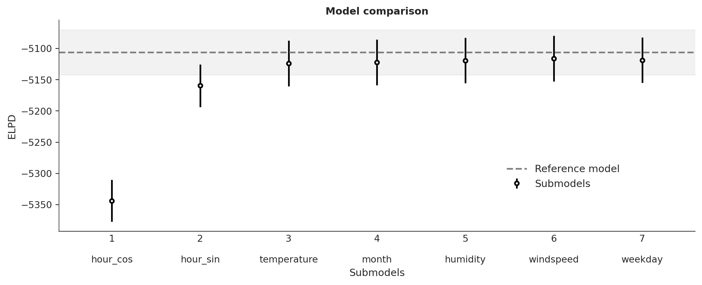

7 Variable Selection
Variable selection refers to the process of identifying the most relevant variables in a model from a larger set of predictors. When performing this process we usually assume that variables contribute unevenly to the outcome and we want to identify the most important ones. Sometimes we also care about the order in which variables are included in the model (Martin 2024; Piironen, Paasiniemi, and Vehtari 2020).
One might argue that “the most Bayesian thing to do” is to always include all conceivable variables in a model and then use the posterior distribution to make predictions or understand variable relationships. This approach is considered “most Bayesian” because it leverages the maximum amount of data and incorporates uncertainty about variable importance into the posterior distribution. However, being more Bayesian than Bayes is not always the best idea.
Variable selection becomes particularly useful when:
We need to reduce measurement costs. For instance, in medicine, we may have the resources to conduct a pilot study measuring 30 variables for 200 patients but cannot afford to do the same for thousands of people. Similarly, we might be able to install numerous sensors in a field to model crop yields but cannot scale this to cover an entire agricultural region. Cost reduction isn’t always about money or time—when working with humans or animals, it also involves minimizing pain and discomfort.
We aim to reduce computational costs. While computational costs may not be an issue for small, simple models, they can become prohibitive when dealing with many variables, large datasets, or both.
We want to better understand significant correlation structures. In other words, we aim to identify which variables contribute the most to making better predictions. Note that this is not about causality. While statistical models, particularly GLMs, can be used for causal inference, doing so requires additional steps and assumptions. This course does not cover causal inference methods. For a very simple introduction to causal inference, you can watch this video. If you are more seriously interested, consider Scott Cunningham’s book, Causal Inference: The Mixtape, or the Python package CausalPy.
We want a model that is more robust to changes in the data-generating distribution. Variable selection can serve as a way to make a model more resilient to non-representative data.
7.1 Methods for variable selection
There are many methods for variable selection we will restrict the discussion to two methods for variable selection. Even more, we are going to restrict the discussion to two particular implementations of these methods.
- The first one it’s available in PyMC-BART (Quiroga et al. 2022) and works for Bayesian Additive Regression Models.
- The second method is implemented in Kulprit and is currently compatible with a subset of models supported by Bambi. However, the aim is to extend compatibility to all models that can be handled by Bambi. A very accesible paper discussing this method in general and not the particular implementation in Kulprit is McLatchie et al. (2023).
For both methods is of central importance to understand the concept of “reference model” as they work by comparing the reference model with a series of submodels. The reference model is the model that has all the variables we consider relevant a priori and is the only model that we will fit using standard inference methods, like MCMC. In both methods, the submodels are created by selecting a subset of the covariates in the reference model. As the number of possible submodels grows very fast with the number of covariates, both methods can use different heuristics to select the most promising submodels to fit. The main difference between these two methods is how they approximate the posterior distribution of the submodels and how they use this approximation to select the most promising submodels.
7.2 Variable selection with BART
BART is a non-parametric regression method based on a sum of trees, this is all we need to understand at the moment for details you can read the original paper (Chipman, George, and McCulloch 2010) and the paper introducing PyMC-BART (Quiroga et al. 2022).
Once we fit a BART model we can count the number of times each covariate is used in the posterior distribution of trees. This count can be used as a measure of the importance of the covariate. We will call this the “variable inclusion” measure, or VI for short, and is normalized to sum to 1. One heuristic is to start with a model with a single covariate and then add covariates in decreasing order of VI. This is fast as we only need to evaluate as many models as covariates we have. This is the default heuristic in PyMC-BART. Then to evaluate the quality of each submodel we compute the predictions from it and compare the predictions with those from the reference model. Currently, PyMC-BART uses the R², but other metrics could be used. For the submodels the predictions are computed by pruning the trees in the posterior distribution of the reference model. That is we remove the trees the branches that do not use the covariates in the submodel. In this way, we approximate the posterior distribution of the submodel and we can compute the predictions without the need to refit each submodel.
Let’s see one example. We have a record of the number of rented bikes in a city and other variables like temperature, hour of the day etc. We want to model the relationship between temperature and the number of rented bikes.
Let’s first load the data and define the variables.
Now we define the BART model using PyMC-BART, for details on how to define BART models, please check the PyMC-BART documentation
with pm.Model() as model:
α = pm.HalfNormal("α", 2)
μ_ = pmb.BART("μ_", X, np.log(Y))
μ = pm.Deterministic("μ", np.exp(μ_))
y = pm.NegativeBinomial("y", mu=μ, alpha=α, observed=Y)
idata = pm.sample(random_seed=seed,
compute_convergence_checks=False)Multiprocess sampling (2 chains in 2 jobs)
CompoundStep
>NUTS: [α]
>PGBART: [μ_]
Sampling 2 chains for 1_000 tune and 1_000 draw iterations (2_000 + 2_000 draws total) took 54 seconds.We can now compute the variable importance and plot the results. The dashed lines represent the mean R² for the predictions from the reference model against themselves, the band captures the uncertainty. Then from left to right, we add covariates in decreasing order of VI. The first submodel is the one with only hour, the second is hour + temperature, the third is hour + temperature + month and so on.
vi_results = pmb.compute_variable_importance(idata, μ_, X);
ax = pmb.plot_variable_importance(vi_results, plot_kwargs={"rotation": 45}, figsize=(10, 4))
ax.set_ylim(0.5, 1)
We can see that the most relevant variable is hour, followed by temperature after that it is difficult to see any improvement and all differences appear to be noise.
PyMC-BART offers two other heuristics. "Backward" and VI-Backward, the first one ignores the variable inclusion information and instead begins by computing all models with one variable less than the total, it removes the one with the lowest R² and then repeats the process until only one variable is left. This method is more expensive as it needs to compute a lot of models and it will not scale well with the number of covariates. It is only recommended when the result of the default VI method looks suspicious. For instance, we should always expect that the R² increases monotonically with the number of covariates, if this is not the case we should use the Backward method. The VI-Backward method is a blend of both heuristics. It performs a backward search but the variables with the highest variable inclusion are fixed during this search. How many variables we consider fixed is a user choice. This method is more expensive than the default VI method but less than the Backward method.
7.2.1 Partial dependence plot
Strictly speaking when we say we prune the trees we are actually computing the partial dependence, that is, we are computing the expected value of the outcome for a subset of the covariates while averaging over the complement of that subset. With PyMC-BART we can visually inspect the partial dependence when excluding all but one covariate. As in the following figure:
axes = pmb.plot_pdp(μ_, X=X, Y=Y, grid=(2, 3), func=np.exp, var_discrete=[0, 2], xs_interval="insample", figsize=(12, 5))
null = np.exp(idata.posterior["μ_"].mean())
for ax in axes.ravel():
ax.axhline(null, color="0.5", linestyle="--")
The dashed lines represent a null model, the more a variable deviates from these lines the more its impact on the response variable. We can see a qualitative agreement between the variable importance and the partial dependence plots.
7.3 Variable selection with Kulprit
Kulprit is an implementation of a method known as projective inference. The main idea is that we can “project” the reference model’s posterior into the submodels. Conceptually, it is easier to understand this projection as a procedure to find a posterior distribution for the submodel that will induce a posterior predictive distribution that is as close as possible to the posterior predictive distribution of the reference model. Intuitively, this makes sense in the context of variable selection, as we want to find a model that is smaller than the reference model but makes predictions that are as close as possible to it.
It turns out, that this can be achieved as an optimization problem. Let’s see.
Denote \(\theta\) as the parameter of the posterior from the reference model, and \(\theta_\perp\) those of the posterior for a particular submodel. Denote \(\tilde{y}\) the samples from the posterior predictive distribution of the reference model \(p(\tilde{y} \mid \theta)\). Then we want to find a posterior that induces the posterior predictive distribution \(q(\tilde{y} \mid \theta_\perp)\). We want \(p\) and \(q\) to be as close as possible. As we already discussed in Chapter 6 we can use the Kullback-Leibler divergence to measure how close two distributions are. Then we can write:
\[\begin{align} \mathbb{KL}\{p(\tilde{y}\mid\theta) \lVert q(\tilde{y})\} &= \mathbb{E}_{\tilde{y}\sim p(\tilde{y}\mid\theta)} \left[ \log \frac{p(\tilde{y}\mid\theta)}{q(\tilde{y}\mid\theta_\perp)} \right] \\ &= \underbrace{\mathbb{E}_{\tilde{y}\sim p(\tilde{y}\mid\theta)} \left[ \log p(\tilde{y}\mid\theta)\right]}_{\text{constant}} - \mathbb{E}_{\tilde{y}\sim p(\tilde{y}\mid\theta)} \left[ \log q(\tilde{y}\mid\theta_\perp)\right] \\ &\propto - \mathbb{E}_{\tilde{y}\sim p(\tilde{y}\mid\theta)} \left[ \log q(\tilde{y}\mid\theta_\perp)\right] \end{align}\]
In the proposed approach \(\log q(\tilde{y} \mid \theta_\perp)\) is the log-likelihood of our model evaluated with respect to samples from the posterior predictive distribution \(\tilde{y}\sim p(\tilde{y}\mid\theta)\). Thus to minimize the KL divergence we can maximize the model’s log-likelihood with respect to the posterior predictive samples from the reference model. This is the optimization problem we need to solve to find the posterior distribution of the submodel.
Let’s use Kulprit to perform variable selection on the same dataset we used for PyMC-BART.
The first thing we need to do is to define the model using Bambi. We need to set idata_kwargs={'log_likelihood': True} as we will later need to compute the ELPD of the reference models and submodels.
model = bmb.Model("count ~" + " + ".join([c for c in bikes.columns if c!="count"]), data=bikes, family="negativebinomial")
idata = model.fit(idata_kwargs={'log_likelihood': True}, random_seed=seed)Initializing NUTS using jitter+adapt_diag...
Multiprocess sampling (2 chains in 2 jobs)
NUTS: [alpha, Intercept, month, hour, weekday, temperature, humidity, windspeed]
Sampling 2 chains for 1_000 tune and 1_000 draw iterations (2_000 + 2_000 draws total) took 5 seconds.
We recommend running at least 4 chains for robust computation of convergence diagnosticsTo use Kulprit we first instantiate the ProjectionPredictive class and then call the project method, which is the one doing all the hard work.
Once this is finished we can inspect the ppi object manually, but a plot is usually a better idea. By default, the compare function plots all the models, including the intercept-only model, i.e. a model without any covariate. In the following block of code, we are asking to omit this model.
We can see that this plot is very similar to the one generated with pmb.plot_variable_importance and its interpretation is also similar. One important difference is that compare uses the ELPD to compare the models.
We can see that for Kulprit the most relevant variable is hour, followed by temperature and then humidity, after that adding more variables does not improve the model. The order agrees with PyMC-BART but Kulprit considers 3 variables as relevant instead of 2. This is most likely because the effect of hour is non-linear and thus difficult to capture with a simple linear model. Let’s put this idea to the test.
Instead of using the variable hour, let’s apply a transformation first.
Now we can repeat the process.
model = bmb.Model("count ~" + " + ".join([c for c in bikes.columns if c!="count"]), data=bikes, family="negativebinomial")
idata = model.fit(idata_kwargs={'log_likelihood': True}, random_seed=seed)
ppi = kpt.ProjectionPredictive(model, idata)
ppi.project()
ppi.compare(min_model_size=1);Initializing NUTS using jitter+adapt_diag...
Multiprocess sampling (2 chains in 2 jobs)
NUTS: [alpha, Intercept, month, weekday, temperature, humidity, windspeed, hour_sin, hour_cos]
Sampling 2 chains for 1_000 tune and 1_000 draw iterations (2_000 + 2_000 draws total) took 5 seconds.
We recommend running at least 4 chains for robust computation of convergence diagnostics
And voilà! If we consider hour_cos and hour_sin as a single variable, then the two most relevant variables are hour and temperature, in agreement with PyMC-BART.
7.3.1 Consequences of performing a nom-penalized optimization
In Bayesian statistics the priors, and the fact that the posterior computations involves integrating over those priors, instead of optimizing a loss function, is what provides the regularization. The current implementation of projective inference in Kulprit does not include any penalization term. This means that the optimization problem is not regularized. This has some consequences in practice. As Kulprit is still experimental and under development, what is discussed in this section could change in the future.
We are going to use a synthetic example as this allows more control. We are going to use a function that has 5 covariables related to the response variable and 5 covariates that are unrelated, pure noise.
np.random.seed(793)
N = 10
data = pd.DataFrame(
np.random.normal(0, 1, size=(1253, N)), columns=[f"x_{i}" for i in range(N)]
)
f_x = (
10 * data["x_0"]
+ 10 * data["x_1"]
+ 10 * data["x_2"]
+ 20 * (data["x_3"] - 0.5) ** 2
+ 5 * data["x_4"]
)
data["y"] = np.random.normal(f_x, 1)Here we should expect Kulprit to identify the 5 variables from x_0 to x_1 as relevant. Ideally, x_3 should be the most relevant, and x_4 the least one.
As previously done, we need to first fit a Bambi’s model then call the main class in Kulprit and finally project and plot.
model = bmb.Model("y ~ " + " + ".join([f"x_{i}" for i in range(N)]), data=data)
idata = model.fit(idata_kwargs={'log_likelihood': True}, random_seed=seed)
ppi = kpt.ProjectionPredictive(model, idata)
ppi.project()
ppi.compare(min_model_size=1);As expected, we have the ELPD increasing when we add the first 5 variables (from x_0 to x_4) and then it plateaus for the rest, indicating that we just need variables x_0 to x_4, and the rest are spurious.
Let’s do two more tests. For the first one we increase the number of total variables to 25, that is the first 5 variables are relevant and the rest are spurious. For the second one, we do the same but also decrease the sample size from 1235 to 235.
From Figure 7.1 we see that initially the ELPD increases as variables are added reaching a peak when all the variables known to be related to the response have been included. Beyond this point, adding more variables causes the ELPD to first plateau and then become worse. The observed decline is a direct consequence of not penalizing the optimization process used for the projection. Without the benefits of Bayesian inference, adding parameters beyond the point of improved performance only leads to an increased model complexity resulting in poorer generalization error, reflected in a lower ELPD.
7.4 Combining PyMC-BART and Kulprit
Both methods are not necessarily competitors and there is room for collaboration. When this is useful is still open to research but we can think of some scenarios where this could be useful. For instance, we could use PyMC-BART to find the most relevant variables, according to the variable inclusion metric, and then use Kulprit to perform the projection. We could also use the posterior predictive samples from PyMC-BART instead of a GLM. The second option requires some changes in Kulprit, but the first one is straightforward as the method project supports a path argument that allows to specify the submodels that we want to project. Notice that if we provide the path there is no search done, Kulprit will project and evaluate just the submodels we specify.
path = [["hour_cos", "hour_sin"],
["hour_cos", "hour_sin", "temperature"],
["hour_cos", "hour_sin", "temperature", "humidity"],
["hour_cos", "hour_sin", "temperature", "humidity", "month"],
["hour_cos", "hour_sin", "temperature", "humidity", "month", "weekday"],
["hour_cos", "hour_sin", "temperature", "humidity", "month", "weekday", "windspeed"],
]
ppi.project(path=path)